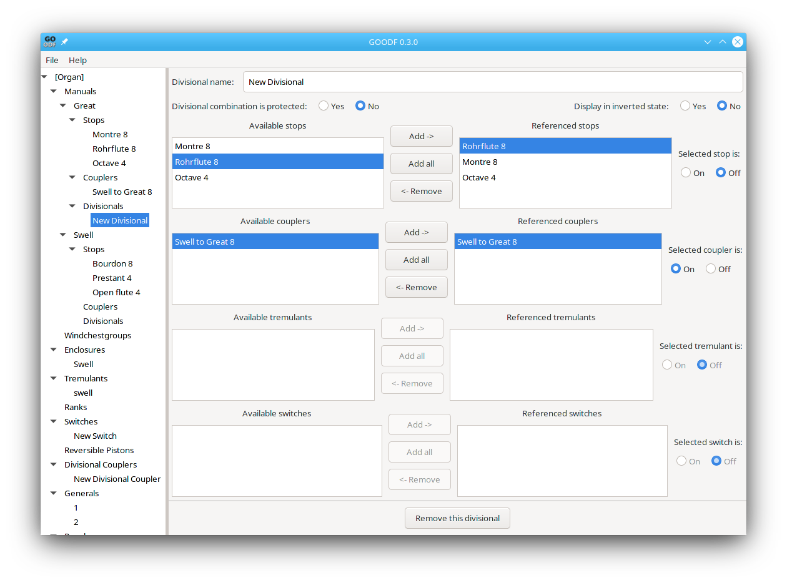

A divisional is defined as a subsidiary object to a manual. It is used as part of a combination action to automatically draw and retire stops that have been stored in memory, but only effects those objects associated with its own manual. The following window is shown when editing a Divisional:

The Divisional window allows stops,couplers,tremulants, and switches to be referenced. Each referenced object must be selected to choose if it will be on or off when the divisional is activated. Divisional Combination is Protected ensures that the selected state of each referenced element cannot be changed by the organ user with the Set button.